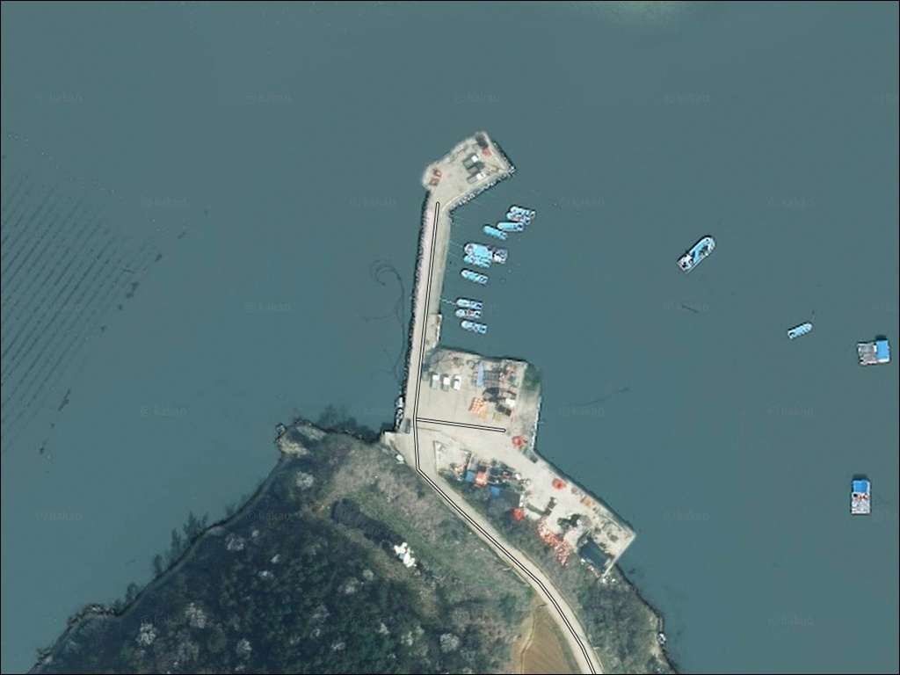
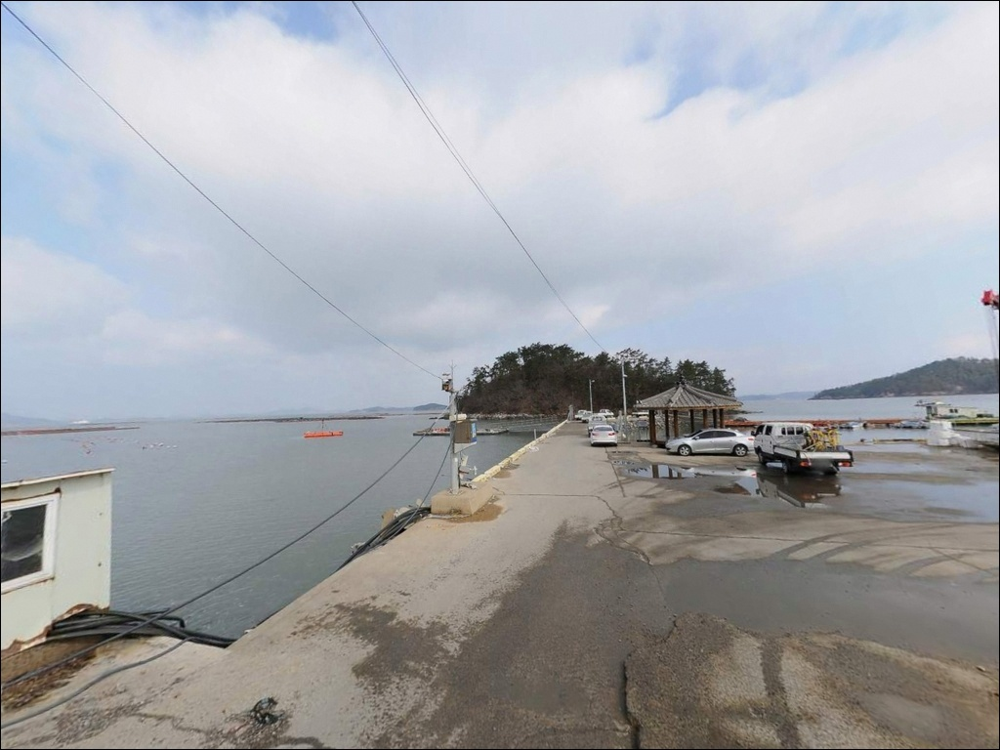
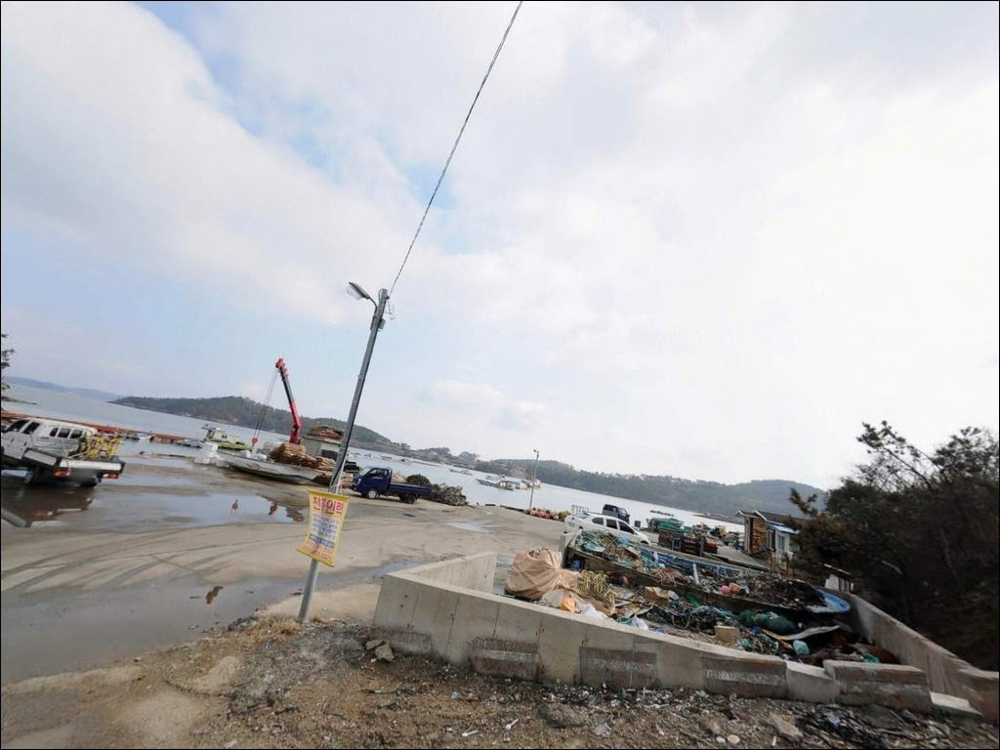
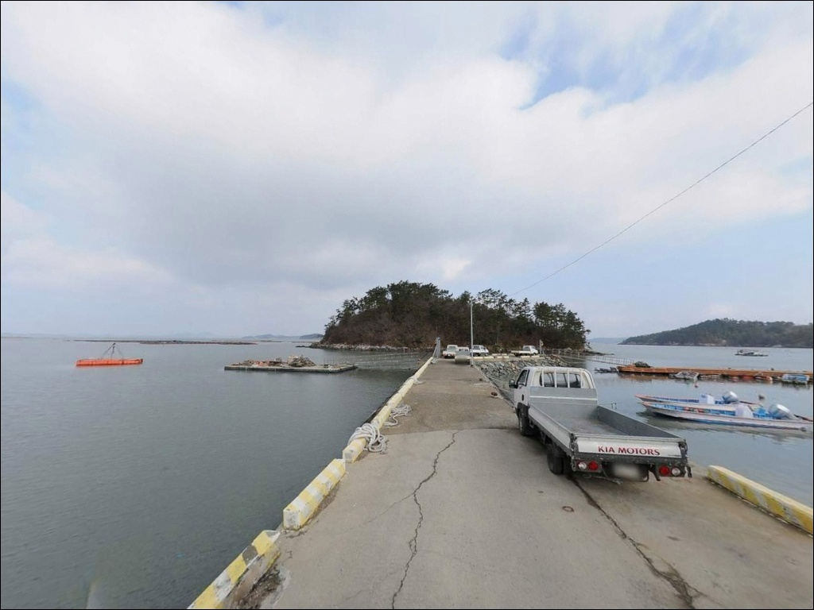
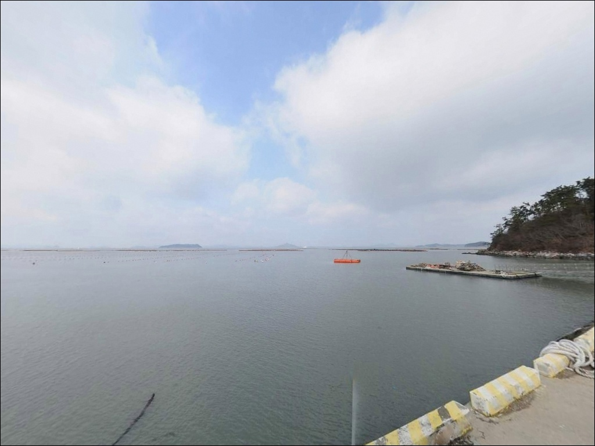
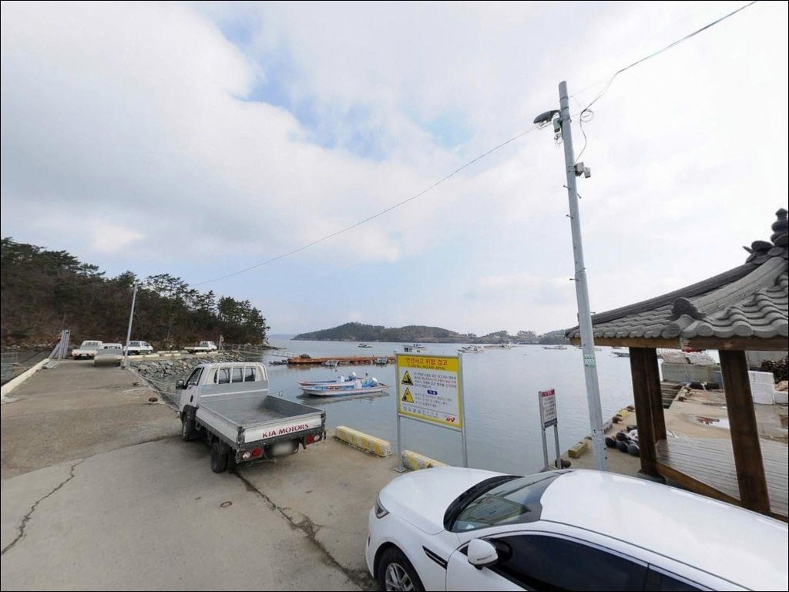
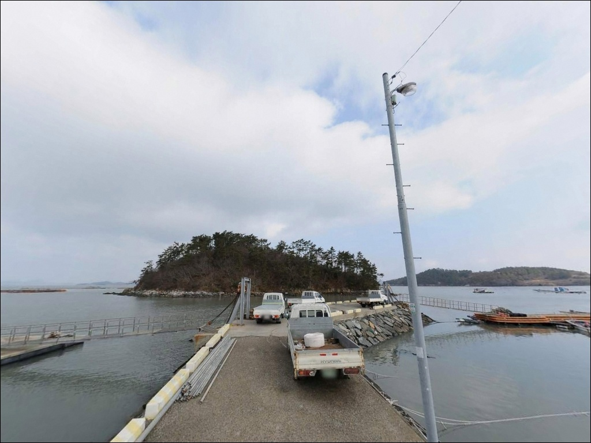
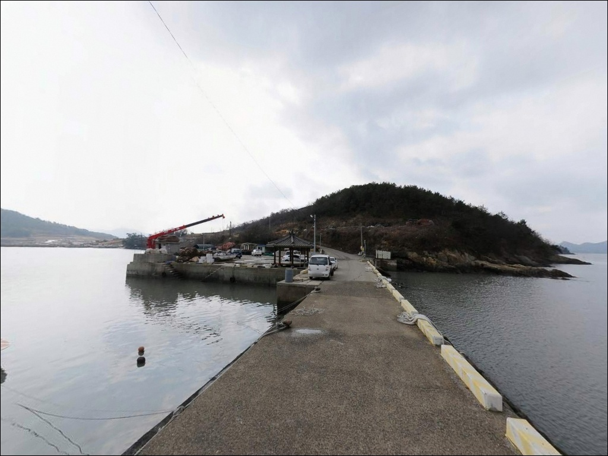
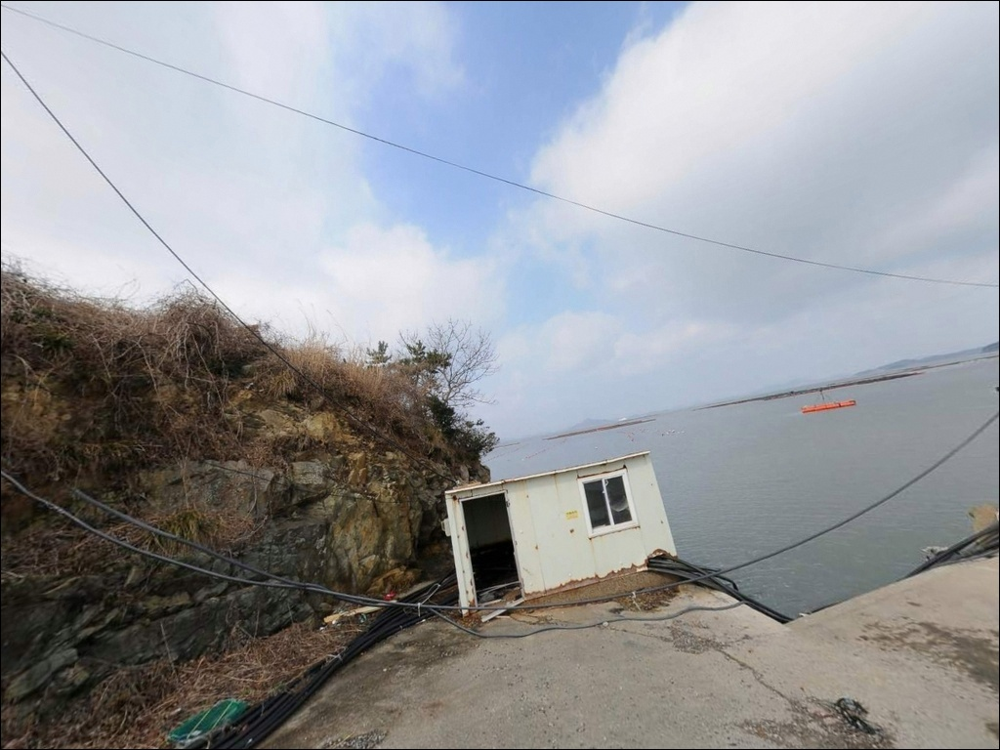

둔전방파제(수유리 선착장), 진도 전남 진도군 고요한 수면을 바라보며 차박, 낚시를 즐기기 좋은 해안
이 페이지에는 광고(제휴 링크 포함)가 있으며, 광고 링크를 통해 구매하면 운영자가 판매 수익 또는 수수료를 받을 수 있습니다. 포인트 사진: 카카오맵 스카이뷰·로드뷰. 이 페이지의 지도·사진 이미지는 카카오맵의 실제 서비스 이미지와 다를 수 있습니다.


둔전방파제(수유리 선착장)
전남 진도군 진도읍 수유리 1020-10
진도 수유리 선착장을 물때 확인 없이 찾으면,
간조 시 바닥이 드러나
채비를 띄울 수면 자체가 없어집니다.
진도 해역은 조전 차가 크고 조류 소통이 활발한 서남해로,
소형 선착장 전면은 간조 전후
낚시 진입이 불가능한 수준까지 얕아지는 구조입니다.
이 글은
둔전방파제(수유리 선착장)의
진입 조건, 물때 기반 낚시 여건,
차박 체류 환경, 대안 포인트에 집중합니다.
조황 단정이나 특정 어종 보장은
이 글의 범위에 포함되지 않습니다.

1. 진입 동선과 포인트 접근성
수유리는 진도읍 서부 해안선 안쪽에 자리한
소규모 어촌 마을입니다.
진도읍 읍내에서 진입할 경우
지방도를 벗어나 마을 안길로 들어서는 구조로,
도로 폭이 좁아지는 구간이 포함됩니다.
승용차 기준으로 진입 자체에 큰 어려움은 없지만,
대형 차량이라면 출발 전 위성지도로
마을 안쪽 진입로를 먼저 확인하는 편이 안전합니다.
선착장 주변 회차 공간은 넉넉하지 않습니다.
어선 작업 공간과 겹칠 수 있어
진입 후 바로 빠져나오기 어려운 상황이 생깁니다.
주차는 선착장 접안부 옆 공터나
마을 진입 전 도로변을 활용하는 방식이 현실적이며,
어선 이동 동선을 막지 않는 자리를
우선으로 선택해야 합니다.

2. 차박 환경과 야간 체류 여건
수유리는 민가 밀집도가 낮은
조용한 어촌 마을입니다.
야간 통행이 적고 외해 직접 노출이 없어
파도 소음이 강하지 않은 환경이지만,
선착장 인근 주차 공간이 좁아
차박을 메인으로 삼기에는 공간 확보가 먼저입니다.
어민 작업 공간을 피한 자리를 잡는 것이
기본 매너입니다.
가로등 수가 제한적인 구조로,
야간에는 개인 조명 장비에 의존해야 합니다.
민가와 가까운 편이라
완전히 고립된 분위기보다는
조용한 마을형 체류 방식에 가깝습니다.
독립형 숙영을 원한다면
백조호수공원(수유리 1426 인근) 쪽
넓은 주차 공간을 대안으로 검토할 수 있습니다.


3. 주변 편의시설 및 인프라 현황
수유리 선착장 반경 1~2km 이내에는
편의점이나 낚시 소품을 구입할 수 있는 시설이 없습니다.
완전 자급 체제로 진입하는 것이
이 포인트의 기본 준비 방식입니다.
식수, 얼음, 미끼, 여분 채비, 연료 모두
출발 전에 갖춰야 합니다.
진도읍 읍내는 약 3~5km 거리에 있습니다.
편의점, 마트, 식당 등 생활 인프라를
읍내에서 해결할 수 있습니다.
진도는 읍내를 벗어나면 낚시점이 드문 편이므로
미끼와 채비는 진도읍 읍내 또는 출발지에서
미리 준비해 가는 것이 현실적입니다.
미끼와 채비는 진도읍 읍내에서 미리 갖춰야 하며,
현장 인근에서 구입하기 어려운 구조의 포인트입니다.

4. 물때를 먼저 확인해야 하는 이유
진도 해역은 서남해를 대표하는
강조류 지역입니다.
울돌목(명량해협)의 영향을 받는 이 일대는
사리 전후 조류 속도가 빠르고,
조전 차가 커 들물과 썰물 사이
수심 변화 폭이 큰 편입니다.
소형 선착장 전면은 간조 때 바닥이 드러나
채비를 내릴 수면이 사라지는 구조입니다.
바다타임에서 진도읍 기준 물때를 확인하고,
들물 시작 전후 또는 만조 전후 타이밍을
노려 출발 시각을 맞추는 것이
이 포인트를 공략하는 첫 번째 조건입니다.
당일 기상 예보는 출발 아침에 한 번 더 확인하는 편이 좋습니다.
진도 서남해는 바람 변수가 큰 해역입니다.

5. 지형 기반 낚시 여건 분석
둔전방파제(수유리 선착장)은
진도 본섬 서부 해안선 내만권에 자리한
소규모 석축형 선착장입니다.
외해 직접 노출보다는 만 안쪽 구조에 가까워
파도 영향이 적고 수면이 비교적 잔잔한 편입니다.
선착장 전면은 완만한 펄·모래 지형이 깔린
완만한 수심 구조이며,
선착장 끝단이나 석축 외측은
상대적으로 수심이 깊어지는 구간입니다.
조류는 만 안쪽 구조 특성상
외항에 비해 흐름이 완만하지만,
진도 해역 전반의 조전 차 영향으로
들물·날물 방향 변화는 뚜렷하게 나타납니다.
체류형 어종이 머물기 좋은 조건을 갖추고 있으며,
선착장 석축 주변 바닥에는
어종의 은신 구간이 형성될 수 있는 지형 변화가
있는 편입니다.
이 포인트에 대한 직접 조황 자료는 많지 않습니다.
출조 전에 진도 수유리 낚시 또는
진도읍 방파제 조황으로 최신 정보를
먼저 검색해 보시기 바랍니다.
진도 해역 자체는 감성돔·숭어·볼락을 비롯한
어족자원이 풍부한 청정해역으로 알려져 있으며,
같은 진도읍 해안선권 선착장들에서
원투낚시 조과가 확인되고 있습니다.


6. 이 포인트에 어울리는 낚시 스타일
이 포인트 지형 조건에서 가장 기본이 되는 방식은
원투낚시입니다.
완만한 펄·모래 바닥 구조와
선착장 끝단의 상대적으로 깊은 수심은
봉돌을 달아 멀리 던지는 원투 채비에
어울리는 조건입니다.
들물 시작 전후 타이밍에 채비를 멀리 보내
바닥층을 탐색하는 방식이 이 포인트에 맞습니다.
릴찌낚시도 이 포인트 구조에 고려할 수 있는 스타일입니다.
선착장 가장자리와 석축 외측을 따라
흘림 채비를 운용하면
감성돔을 비롯한 중층 어종을
탐색하기에 어울립니다.
만조 전후 조류 흐름이 살아 있는
타이밍에 집중하는 것이 이 방식의 핵심입니다.
볼락 라이트게임은 야간 선택지로 검토할 수 있습니다.
석축 주변과 선착장 끝단
지형 변화 구간은 볼락이 서식하기 좋은
조건을 갖추고 있습니다.
소형 지그헤드 채비로
선착장 주변을 천천히 탐색하는 방식이
야간 입장 시 효율적이며,
숭어와 농어를 노리는 가벼운 루어 세팅도
이 지형에서 병행할 수 있습니다.

7. 대안 포인트와 플랜 B 동선
둔전방파제(수유리 선착장)이 여의치 않을 때
같은 진도읍 해안선권 안에서
먼저 검토할 수 있는 곳은
보전리 선착장입니다.
진도읍 권역 안에 있으며
원투낚시 조과가 실제로 확인된 포인트입니다.
두 선착장을 엮어 반나절 이상 탐색하는 방식이
이 권역에서 효율적인 이동 동선입니다.
진도읍에서 차량으로 이동하면
고군면 권역의 용호항도 대안이 됩니다.
방파제 2개가 갖춰진 구조로
발판이 안정적이고
봄 가자미와 감성돔 조과가 확인된 곳입니다.
수유리 선착장 탐색 후
조황이 기대에 못 미칠 때
용호항으로 이동하는 동선이 효율적입니다.
차박 체류 공간으로는
백조호수공원(수유리 1426 인근)이
넓은 주차 공간을 갖추고 있어
독립형 차박 체류지로 검토할 수 있습니다.
선착장에서 거리가 멀지 않아
낚시와 차박을 분리해 운용하기에 좋은 동선입니다.

아직 덜 알려진 만큼,
제대로 준비한 사람에게
유리한 포인트입니다
원투낚시나 찌낚시를 즐기는 낚시인이라면
둔전방파제(수유리 선착장)의 지형 조건은
시도해볼 만한 구조입니다.
온라인에 자료가 많지 않고
직접 발품을 팔아야 하는 탐험형 포인트이기도 해서,
먼저 방문해 지형을 파악해 두면
이후 출조에서 유리한 자리를 잡을 수 있습니다.
반면 물때 확인 없이 진입하거나,
미끼·채비를 현장에서 구하려 하면
빈손으로 돌아오는 상황을 맞닥뜨리기 쉽습니다.
물때 확인, 완전 자급 준비, 진입로 사전 점검,
이 세 가지를 갖추고 간다면
진도 서남해의 청정한 낚시 환경을
조용하게 누릴 수 있는 포인트입니다.
선착장 인근 공간이 넉넉하지 않아
차박은 보조적 선택에 가깝지만,
인근 백조호수공원 쪽을 베이스로 잡고
선착장 낚시를 왕복하는 방식이라면
낚시와 차박을 동시에 즐기는
조용한 진도 출조가 될 수 있습니다.